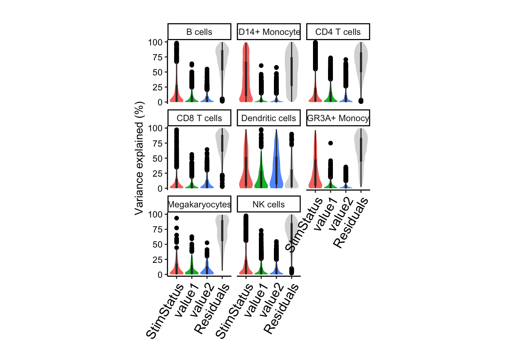

Modeling continuous cell-level covariates
Collapse using mean value for pseudobulk data
Developed by Gabriel Hoffman
Run on 2023-03-07 16:03:27
Source:vignettes/cell_level_covariates.Rmd
cell_level_covariates.RmdSince read counts are summed across cells in a pseudobulk approach, modeling continuous cell-level covariates also requires a collapsing step. Here we summarize the values of a variable from a set of cells using the mean, and store the value for each cell type. Including these variables in a regression formula uses the summarized values from the corresponding cell type.
We demonstrate this feature on a lightly modified analysis of PBMCs from 8 individuals stimulated with interferon-β (Kang, et al, 2018, Nature Biotech).
Standard processing
Here is the code from the main vignette:
library(dreamlet)
library(muscat)
library(ExperimentHub)
library(scater)
# Download data, specifying EH2259 for the Kang, et al study
eh <- ExperimentHub()
sce <- eh[["EH2259"]]
# only keep singlet cells with sufficient reads
sce <- sce[rowSums(counts(sce) > 0) > 0, ]
sce <- sce[,colData(sce)$multiplets == 'singlet']
# compute QC metrics
qc <- perCellQCMetrics(sce)
# remove cells with few or many detected genes
ol <- isOutlier(metric = qc$detected, nmads = 2, log = TRUE)
sce <- sce[, !ol]
# set variable indicating stimulated (stim) or control (ctrl)
sce$StimStatus = sce$stimIn many datasets, continuous cell-level variables could be mapped reads, gene count, mitochondrial rate, etc. There are no continuous cell-level variables in this dataset, so we can simulate two from a normal distribution:
Pseudobulk
Now compute the pseudobulk using standard code:
sce$id <- paste0(sce$StimStatus, sce$ind)
# Create pseudobulk
pb <- aggregateToPseudoBulk(sce,
assay = "counts",
cluster_id = "cell",
sample_id = "id",
verbose = FALSE)The means per variable, cell type, and sample are stored in the
pseudobulk SingleCellExperiment object:
metadata(pb)$aggr_means## # A tibble: 128 × 6
## # Groups: cell [8]
## cell id ind cluster value1 value2
## <fct> <fct> <dbl> <dbl> <dbl> <dbl>
## 1 B cells ctrl101 101 3.96 -0.0262 0.0381
## 2 B cells ctrl1015 1015 4.00 -0.0287 -0.0568
## 3 B cells ctrl1016 1016 4 -0.00749 0.107
## 4 B cells ctrl1039 1039 4.04 -0.0632 -0.0602
## 5 B cells ctrl107 107 4 0.0431 0.0427
## 6 B cells ctrl1244 1244 4 -0.0890 0.0552
## 7 B cells ctrl1256 1256 4.01 -0.0648 -0.00655
## 8 B cells ctrl1488 1488 4.02 -0.0439 0.00504
## 9 B cells stim101 101 4.09 -0.0670 0.0421
## 10 B cells stim1015 1015 4.06 0.120 -0.0476
## # … with 118 more rowsAnalysis
Including these variables in a regression formula uses the summarized
values from the corresponding cell type. This happens behind the scenes,
so the user doesn’t need to distinguish bewteen sample-level variables
stored in colData(pb) and cell-level variables stored in
metadata(pb)$aggr_means.
Variance partition and hypothesis testing proceeds as ususal:
form = ~ StimStatus + value1 + value2
# Normalize and apply voom/voomWithDreamWeights
res.proc = processAssays( pb, form, min.count=5)
# run variance partitioning analysis
vp.lst = fitVarPart( res.proc, form)
# Summarize variance fractions genome-wide for each cell type
plotVarPart(vp.lst, label.angle=60) 
# Differential expression analysis within each assay
res.dl = dreamlet( res.proc, form)
# dreamlet results include coefficients for value1 and value2
res.dl## class: dreamletResult
## assays(8): B cells CD14+ Monocytes ... Megakaryocytes NK cells
## Genes:
## min: 182
## max: 5262
## details(4): assay n_retain formula formDropsTerms
## coefNames(4): (Intercept) StimStatusstim value1 value2Session Info
## R version 4.2.0 (2022-04-22)
## Platform: x86_64-apple-darwin19.6.0 (64-bit)
## Running under: macOS Catalina 10.15.7
##
## Matrix products: default
## BLAS: /System/Library/Frameworks/Accelerate.framework/Versions/A/Frameworks/vecLib.framework/Versions/A/libBLAS.dylib
## LAPACK: /System/Library/Frameworks/Accelerate.framework/Versions/A/Frameworks/vecLib.framework/Versions/A/libLAPACK.dylib
##
## locale:
## [1] en_US.UTF-8/en_US.UTF-8/en_US.UTF-8/C/en_US.UTF-8/en_US.UTF-8
##
## attached base packages:
## [1] splines stats4 stats graphics grDevices utils datasets
## [8] methods base
##
## other attached packages:
## [1] lme4_1.1-31 Matrix_1.5-3
## [3] muscData_1.10.0 scater_1.24.0
## [5] scuttle_1.6.3 SingleCellExperiment_1.18.1
## [7] SummarizedExperiment_1.26.1 Biobase_2.58.0
## [9] GenomicRanges_1.48.0 GenomeInfoDb_1.32.4
## [11] IRanges_2.30.1 S4Vectors_0.34.0
## [13] MatrixGenerics_1.8.1 matrixStats_0.63.0
## [15] ExperimentHub_2.4.0 AnnotationHub_3.4.0
## [17] BiocFileCache_2.4.0 dbplyr_2.2.1
## [19] BiocGenerics_0.44.0 muscat_1.11.2
## [21] dreamlet_0.0.62 variancePartition_1.28.5
## [23] BiocParallel_1.32.0 limma_3.54.0
## [25] ggplot2_3.4.1
##
## loaded via a namespace (and not attached):
## [1] rappdirs_0.3.3 scattermore_0.8
## [3] mashr_0.2.57 ragg_1.2.4
## [5] tidyr_1.2.1 clusterGeneration_1.3.7
## [7] bit64_4.0.5 knitr_1.41
## [9] irlba_2.3.5.1 DelayedArray_0.22.0
## [11] data.table_1.14.6 KEGGREST_1.36.3
## [13] RCurl_1.98-1.9 doParallel_1.0.17
## [15] generics_0.1.3 ScaledMatrix_1.4.1
## [17] RhpcBLASctl_0.21-247.1 RSQLite_2.2.19
## [19] future_1.29.0 bit_4.0.5
## [21] httpuv_1.6.6 assertthat_0.2.1
## [23] viridis_0.6.2 xfun_0.35
## [25] hms_1.1.2 jquerylib_0.1.4
## [27] promises_1.2.0.1 babelgene_22.9
## [29] evaluate_0.18 fansi_1.0.4
## [31] progress_1.2.2 caTools_1.18.2
## [33] Rgraphviz_2.40.0 DBI_1.1.3
## [35] geneplotter_1.74.0 purrr_0.3.5
## [37] ellipsis_0.3.2 dplyr_1.0.10
## [39] backports_1.4.1 annotate_1.74.0
## [41] aod_1.3.2 sparseMatrixStats_1.8.0
## [43] vctrs_0.5.2 abind_1.4-5
## [45] cachem_1.0.6 withr_2.5.0
## [47] sctransform_0.3.5 prettyunits_1.1.1
## [49] softImpute_1.4-1 cluster_2.1.4
## [51] crayon_1.5.2 genefilter_1.78.0
## [53] labeling_0.4.2 edgeR_3.38.4
## [55] pkgconfig_2.0.3 nlme_3.1-160
## [57] vipor_0.4.5 blme_1.0-5
## [59] rlang_1.0.6 globals_0.16.2
## [61] lifecycle_1.0.3 filelock_1.0.2
## [63] rsvd_1.0.5 invgamma_1.1
## [65] rprojroot_2.0.3 graph_1.74.0
## [67] ashr_2.2-54 Rhdf5lib_1.18.2
## [69] boot_1.3-28.1 beeswarm_0.4.0
## [71] GlobalOptions_0.1.2 png_0.1-8
## [73] viridisLite_0.4.1 rjson_0.2.21
## [75] bitops_1.0-7 KernSmooth_2.23-20
## [77] rhdf5filters_1.8.0 EnrichmentBrowser_2.26.0
## [79] Biostrings_2.64.1 blob_1.2.3
## [81] DelayedMatrixStats_1.18.2 shape_1.4.6
## [83] mixsqp_0.3-48 stringr_1.5.0
## [85] SQUAREM_2021.1 parallelly_1.32.1
## [87] remaCor_0.0.11 rmeta_3.0
## [89] beachmat_2.12.0 scales_1.2.1
## [91] memoise_2.0.1 GSEABase_1.58.0
## [93] magrittr_2.0.3 plyr_1.8.8
## [95] gplots_3.1.3 zlibbioc_1.42.0
## [97] compiler_4.2.0 RColorBrewer_1.1-3
## [99] clue_0.3-63 KEGGgraph_1.56.0
## [101] DESeq2_1.36.0 cli_3.6.0
## [103] XVector_0.36.0 lmerTest_3.1-3
## [105] listenv_0.8.0 TMB_1.9.1
## [107] MASS_7.3-58.1 tidyselect_1.2.0
## [109] stringi_1.7.8 textshaping_0.3.6
## [111] highr_0.9 zenith_0.99.13
## [113] yaml_2.3.6 BiocSingular_1.12.0
## [115] locfit_1.5-9.6 ggrepel_0.9.2
## [117] grid_4.2.0 sass_0.4.4
## [119] tools_4.2.0 future.apply_1.10.0
## [121] parallel_4.2.0 circlize_0.4.15
## [123] foreach_1.5.2 gridExtra_2.3
## [125] farver_2.1.1 RcppZiggurat_0.1.6
## [127] digest_0.6.30 BiocManager_1.30.19
## [129] shiny_1.7.3 Rcpp_1.0.9
## [131] broom_1.0.1 later_1.3.0
## [133] BiocVersion_3.15.2 httr_1.4.4
## [135] AnnotationDbi_1.58.0 ComplexHeatmap_2.12.1
## [137] Rdpack_2.4 colorspace_2.1-0
## [139] XML_3.99-0.13 fs_1.5.2
## [141] truncnorm_1.0-8 pkgdown_2.0.6
## [143] systemfonts_1.0.4 xtable_1.8-4
## [145] jsonlite_1.8.4 nloptr_2.0.3
## [147] Rfast_2.0.6 R6_2.5.1
## [149] RUnit_0.4.32 mime_0.12
## [151] pillar_1.8.1 htmltools_0.5.3
## [153] glue_1.6.2 fastmap_1.1.0
## [155] minqa_1.2.5 BiocNeighbors_1.14.0
## [157] interactiveDisplayBase_1.34.0 codetools_0.2-18
## [159] mvtnorm_1.1-3 utf8_1.2.3
## [161] lattice_0.20-45 bslib_0.4.1
## [163] tibble_3.1.8 numDeriv_2016.8-1.1
## [165] pbkrtest_0.5.1 curl_4.3.3
## [167] ggbeeswarm_0.6.0 gtools_3.9.4
## [169] survival_3.4-0 glmmTMB_1.1.5
## [171] rmarkdown_2.18 desc_1.4.2
## [173] munsell_0.5.0 GetoptLong_1.0.5
## [175] rhdf5_2.40.0 GenomeInfoDbData_1.2.8
## [177] iterators_1.0.14 HDF5Array_1.24.2
## [179] reshape2_1.4.4 gtable_0.3.1
## [181] msigdbr_7.5.1 rbibutils_2.2.10